Generate a simulated cross-sectional sample and estimate seroincidence
Simulation of Enteric Fever using HlyE IgG and/or HlyE IgA
Source:vignettes/articles/simulate_xsectionalData.Rmd
simulate_xsectionalData.RmdThis vignette shows how to simulate a cross-sectional sample of
seroresponses for incident infections as a Poisson process with
frequency lambda. Responses are generated for the
antibodies given in the antigen_isos argument.
Age range of the simulated cross-sectional record is
lifespan.
The size of the sample is nrep.
Each individual is simulated separately, but different antibodies are modelled jointly.
Longitudinal parameters are calculated for an age:
age_fixed (fixed age). However, when age_fixed
is set to NA then the age at infection is used.
The boolean renew_params determines whether each
infection uses a new set of longitudinal parameters, sampled at random
from the posterior predictive output of the longitudinal model. If set
to FALSE, a parameter set is chosen at birth and kept,
but:
the baseline antibody levels (
y0) are updated with the simulated level (just) prior to infection, andwhen
age_fixed = NA, the selected parameter sample is updated for the age when infection occurs.
For our initial simulations, we will set
renew_params = FALSE:
renew_params <- FALSEThere is also a variable n_mcmc_samples: when
n_mcmc_samples==0 then a random MC sample is chosen out of
the posterior set (1:4000). When n_mcmc_samples is given a
value in 1:4000, the chosen number is fixed and reused in any subsequent
infection. This is for diagnostic purposes.
Simulate a single dataset
load model parameters
Here we load in longitudinal parameters; these are modeled from all SEES cases across all ages and countries:
library(serocalculator)
library(tidyverse)
#> ── Attaching core tidyverse packages ──────────────────────── tidyverse 2.0.0 ──
#> ✔ dplyr 1.1.4 ✔ readr 2.1.5
#> ✔ forcats 1.0.0 ✔ stringr 1.5.1
#> ✔ ggplot2 3.5.1 ✔ tibble 3.2.1
#> ✔ lubridate 1.9.4 ✔ tidyr 1.3.1
#> ✔ purrr 1.0.2
#> ── Conflicts ────────────────────────────────────────── tidyverse_conflicts() ──
#> ✖ dplyr::filter() masks stats::filter()
#> ✖ dplyr::lag() masks stats::lag()
#> ℹ Use the conflicted package (<http://conflicted.r-lib.org/>) to force all conflicts to become errors
library(ggbeeswarm) # for plotting
library(dplyr)
dmcmc <-
"https://osf.io/download/rtw5k" |>
load_curve_params() |>
dplyr::filter(iter < 500) # reduce number of mcmc samples for speedvisualize antibody decay model
We can graph individual MCMC samples from the posterior distribution
of model parameters using a autoplot.curve_params() method
for the autoplot() function:
dmcmc |> autoplot(n_curves = 50)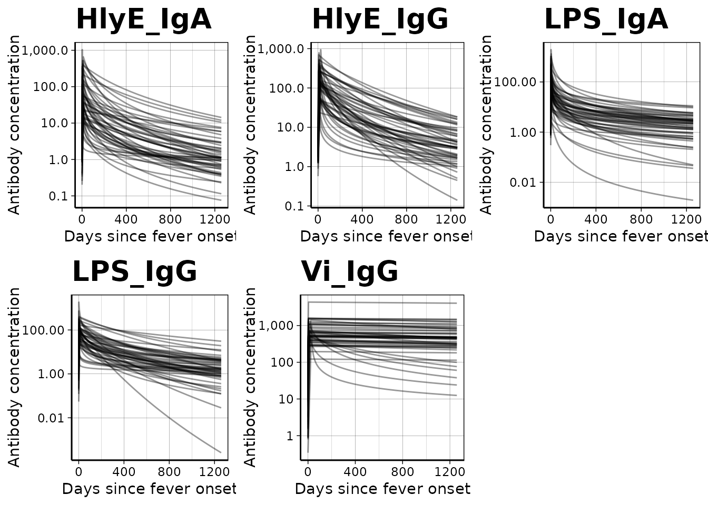
We can use a logarithmic scale for the x-axis if desired:
dmcmc |> autoplot(log_x = TRUE, n_curves = 50)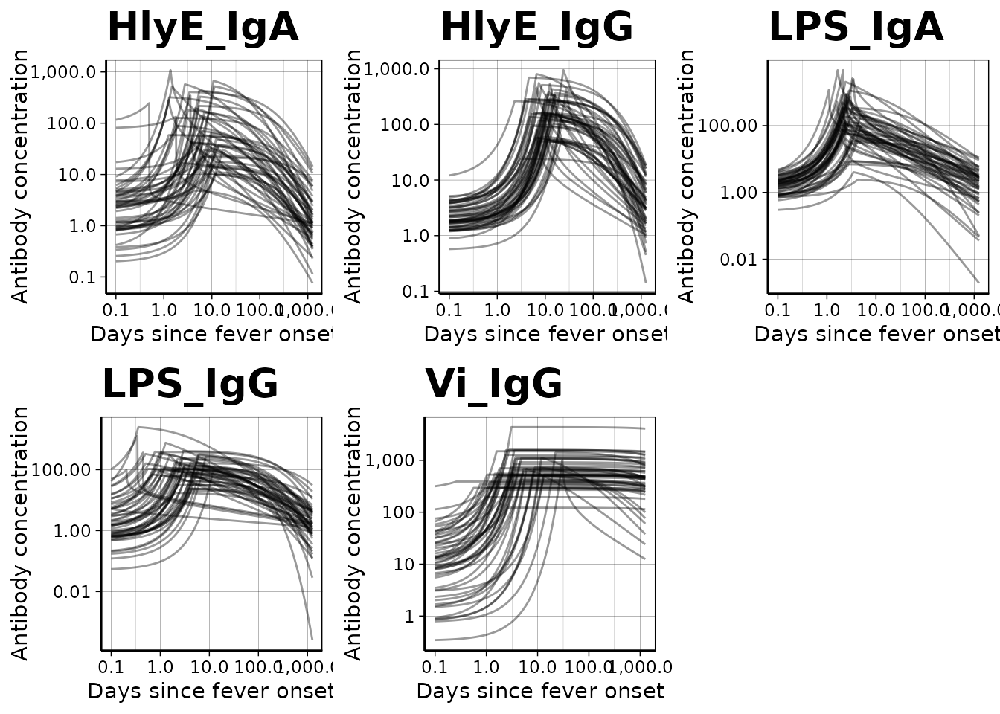
We can graph the median, 10%, and 90% quantiles of the model using
the graph.curve.params() function:
# Specify the antibody-isotype responses to include in analyses
antibodies <- c("HlyE_IgA", "HlyE_IgG")
dmcmc |>
graph.curve.params(antigen_isos = antibodies) |>
print()
#> Warning: Removed 47 rows containing missing values or values outside the scale range
#> (`geom_line()`).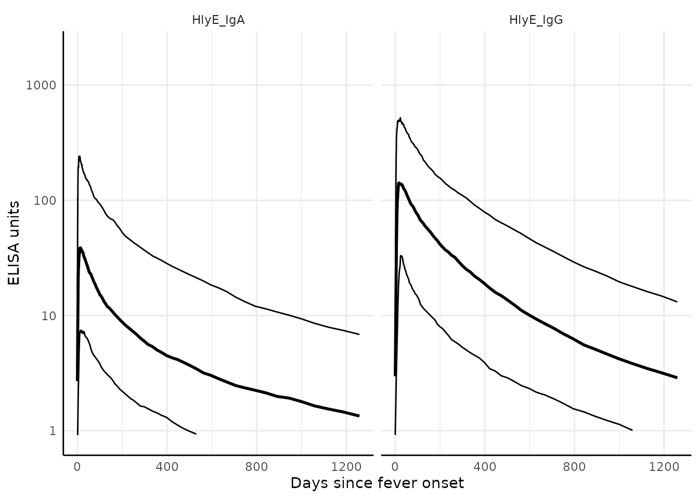
Simulate cross-sectional data
# set seed to reproduce results
set.seed(54321)
# simulated incidence rate per person-year
lambda <- 0.2
# range covered in simulations
lifespan <- c(0, 10)
# cross-sectional sample size
nrep <- 100
# biologic noise distribution
dlims <- rbind(
"HlyE_IgA" = c(min = 0, max = 0.5),
"HlyE_IgG" = c(min = 0, max = 0.5)
)
verbose <- FALSE # whether to print verbose updates as the function runs
# generate cross-sectional data
csdata <- sim_pop_data(
curve_params = dmcmc,
lambda = lambda,
n_samples = nrep,
age_range = lifespan,
antigen_isos = antibodies,
n_mcmc_samples = 0,
renew_params = renew_params,
add_noise = TRUE,
noise_limits = dlims,
format = "long"
)Noise parameters
We need to provide noise parameters for the analysis; here, we define them directly in our code:
Visualize data
We can plot the distribution of the antibody responses in the simulated data.
csdata |>
ggplot() +
aes(x = as.factor(antigen_iso),
y = value) +
geom_beeswarm(
size = .2,
alpha = .3,
aes(color = antigen_iso),
show.legend = FALSE
) +
geom_boxplot(outlier.colour = NA, fill = NA) +
scale_y_log10() +
theme_linedraw() +
labs(x = "antigen - isotype")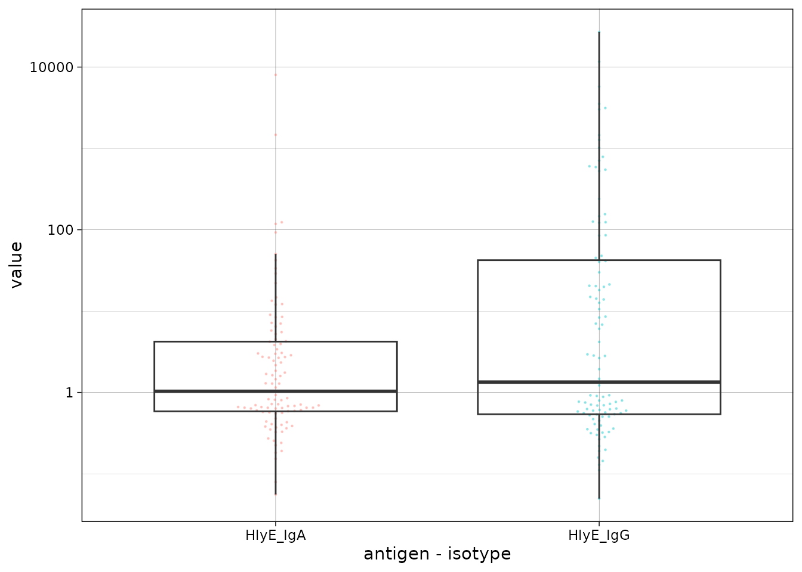
calculate log-likelihood
We can calculate the log-likelihood of the data as a function of the incidence rate directly:
ll_a <-
log_likelihood(
pop_data = csdata,
curve_params = dmcmc,
noise_params = cond,
antigen_isos = "HlyE_IgA",
lambda = 0.1
) |>
print()
#> [1] -266.4948
ll_g <-
log_likelihood(
pop_data = csdata,
curve_params = dmcmc,
noise_params = cond,
antigen_isos = "HlyE_IgG",
lambda = 0.1
) |>
print()
#> [1] -406.6665
ll_ag <-
log_likelihood(
pop_data = csdata,
curve_params = dmcmc,
noise_params = cond,
antigen_isos = c("HlyE_IgG", "HlyE_IgA"),
lambda = 0.1
) |>
print()
#> [1] -673.1613
print(ll_a + ll_g)
#> [1] -673.1613graph log-likelihood
We can also graph the log-likelihoods, even without finding the MLEs,
using graph_loglik():
lik_HlyE_IgA <-
graph_loglik(
pop_data = csdata,
curve_params = dmcmc,
noise_params = cond,
antigen_isos = "HlyE_IgA",
log_x = TRUE
)
lik_HlyE_IgG <- graph_loglik(
previous_plot = lik_HlyE_IgA,
pop_data = csdata,
curve_params = dmcmc,
noise_params = cond,
antigen_isos = "HlyE_IgG",
log_x = TRUE
)
lik_both <- graph_loglik(
previous_plot = lik_HlyE_IgG,
pop_data = csdata,
curve_params = dmcmc,
noise_params = cond,
antigen_isos = c("HlyE_IgG", "HlyE_IgA"),
log_x = TRUE
)
print(lik_both)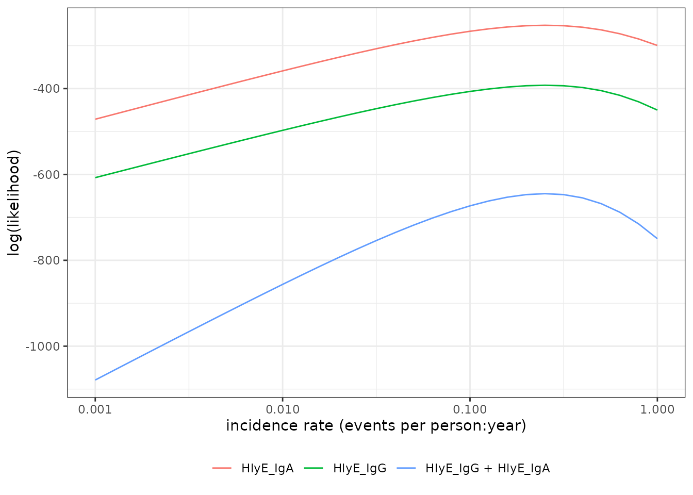
estimate incidence
We can estimate incidence with est.incidence():
est1 <- est.incidence(
pop_data = csdata,
curve_params = dmcmc,
noise_params = cond,
lambda_start = .1,
build_graph = TRUE,
verbose = verbose,
print_graph = FALSE, # display the log-likelihood curve while
#`est.incidence()` is running
antigen_isos = antibodies
)We can extract summary statistics with summary():
summary(est1)
#> Warning: `nlm()` produced a negative hessian; something is wrong with the numerical
#> derivatives.
#> Warning in sqrt(var_log_lambda): NaNs produced
#> # A tibble: 1 × 10
#> est.start incidence.rate SE CI.lwr CI.upr coverage log.lik iterations
#> <dbl> <dbl> <dbl> <dbl> <dbl> <dbl> <dbl> <int>
#> 1 0.1 0.253 NaN NaN NaN 0.95 -645. 9
#> # ℹ 2 more variables: antigen.isos <chr>, nlm.convergence.code <ord>We can plot the log-likelihood curve with
autoplot():
autoplot(est1)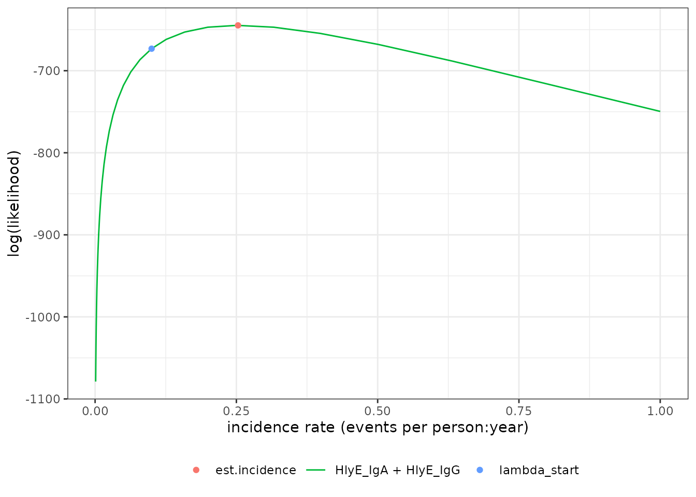
We can set the x-axis to a logarithmic scale:
autoplot(est1, log_x = TRUE)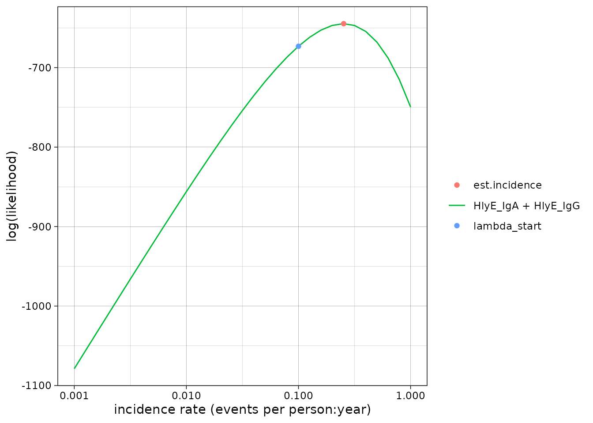
Simulate multiple clusters with different lambdas
library(parallel)
n_cores <- max(1, parallel::detectCores() - 1)
print(n_cores)
#> [1] 3In the preceding code chunk, we have determined that we can use 3 CPU cores to run computations in parallel.
# number of clusters
nclus <- 5
# cross-sectional sample size
nrep <- 100
# incidence rate in e
lambdas <- c(.05, .1, .15, .2, .5, .8)
sim_df <-
sim_pop_data_multi(
n_cores = n_cores,
lambdas = lambdas,
nclus = nclus,
n_samples = nrep,
age_range = lifespan,
antigen_isos = antibodies,
renew_params = renew_params,
add_noise = TRUE,
curve_params = dmcmc,
noise_limits = dlims,
format = "long"
)
print(sim_df)
#> # A tibble: 6,000 × 6
#> age id antigen_iso value lambda.sim cluster
#> <dbl> <chr> <chr> <dbl> <dbl> <int>
#> 1 3.53 1 HlyE_IgA 0.842 0.05 1
#> 2 3.53 1 HlyE_IgG 0.767 0.05 1
#> 3 2.27 2 HlyE_IgA 0.428 0.05 1
#> 4 2.27 2 HlyE_IgG 0.544 0.05 1
#> 5 9.05 3 HlyE_IgA 0.528 0.05 1
#> 6 9.05 3 HlyE_IgG 0.768 0.05 1
#> 7 5.94 4 HlyE_IgA 0.412 0.05 1
#> 8 5.94 4 HlyE_IgG 0.683 0.05 1
#> 9 9.88 5 HlyE_IgA 0.467 0.05 1
#> 10 9.88 5 HlyE_IgG 0.285 0.05 1
#> # ℹ 5,990 more rowsWe can plot the distributions of the simulated responses:
sim_df |>
ggplot() +
aes(
x = as.factor(cluster),
y = value
) +
geom_beeswarm(size = .2, alpha = .3, aes(color = antigen_iso)) +
geom_boxplot(outlier.colour = NA, fill = NA) +
scale_y_log10() +
facet_wrap(~ antigen_iso + lambda.sim, nrow = 2) +
theme_linedraw()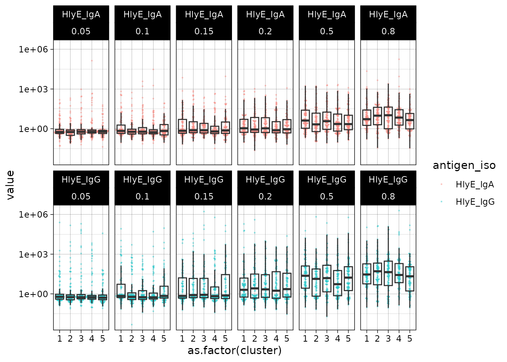
Estimate incidence in each cluster
ests <-
est.incidence.by(
pop_data = sim_df,
curve_params = dmcmc,
noise_params = cond,
num_cores = n_cores,
strata = c("lambda.sim", "cluster"),
curve_strata_varnames = NULL,
noise_strata_varnames = NULL,
verbose = verbose,
build_graph = TRUE, # slows down the function substantially
antigen_isos = c("HlyE_IgG", "HlyE_IgA")
)summary(ests) produces a tibble() with some
extra meta-data:
ests_summary <- ests |> summary() |> print()
#> Warning in sqrt(var_log_lambda): NaNs produced
#> Warning in sqrt(var_log_lambda): NaNs produced
#> Seroincidence estimated given the following setup:
#> a) Antigen isotypes : HlyE_IgG, HlyE_IgA
#> b) Strata : lambda.sim, cluster
#>
#> Seroincidence estimates:
#> # A tibble: 30 × 14
#> Stratum lambda.sim cluster n est.start incidence.rate SE CI.lwr
#> <chr> <dbl> <int> <int> <dbl> <dbl> <dbl> <dbl>
#> 1 Stratum 1 0.05 1 100 0.1 0.0741 0.0111 0.0552
#> 2 Stratum 2 0.05 2 100 0.1 0.0605 0.00992 0.0438
#> 3 Stratum 3 0.05 3 100 0.1 0.0553 0.00952 0.0395
#> 4 Stratum 4 0.05 4 100 0.1 0.0535 0.00930 0.0381
#> 5 Stratum 5 0.05 5 100 0.1 0.0522 0.00898 0.0372
#> 6 Stratum 6 0.1 1 100 0.1 0.0928 0.0131 0.0703
#> 7 Stratum 7 0.1 2 100 0.1 0.0808 0.0123 0.0600
#> 8 Stratum 8 0.1 3 100 0.1 0.0864 0.0547 0.0250
#> 9 Stratum 9 0.1 4 100 0.1 0.0735 0.0112 0.0545
#> 10 Stratum 10 0.1 5 100 0.1 0.117 0.0149 0.0911
#> # ℹ 20 more rows
#> # ℹ 6 more variables: CI.upr <dbl>, coverage <dbl>, log.lik <dbl>,
#> # iterations <int>, antigen.isos <chr>, nlm.convergence.code <ord>We can explore the summary table interactively using
DT::datatable()
library(DT)
ests_summary |>
DT::datatable(options = list(scrollX = TRUE)) |>
DT::formatRound(
columns = c(
"incidence.rate",
"SE",
"CI.lwr",
"CI.upr",
"log.lik"
)
)We can plot the likelihood for a single simulated cluster by
subsetting that simulation in ests and calling
plot():
autoplot(ests[1])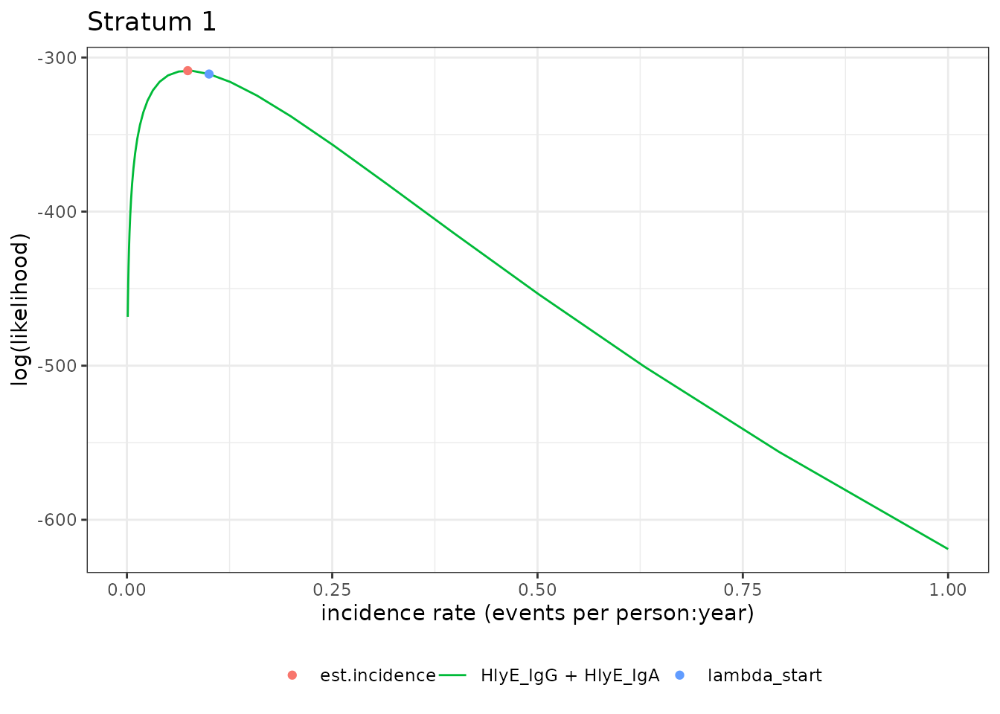
We can also plot log-likelihood curves for several clusters at once (your computer might struggle to plot many at once):
autoplot(ests[1:5])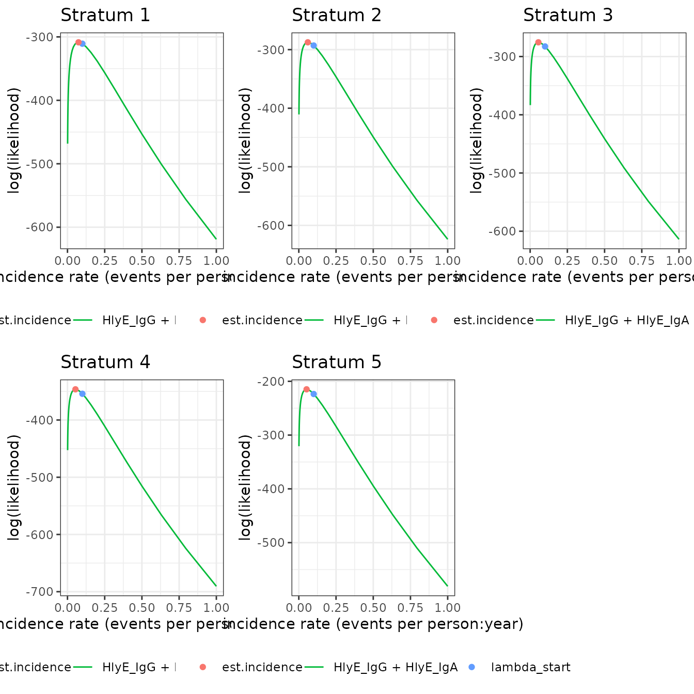
The log_x argument also works here:
autoplot(ests[1:5], log_x = TRUE)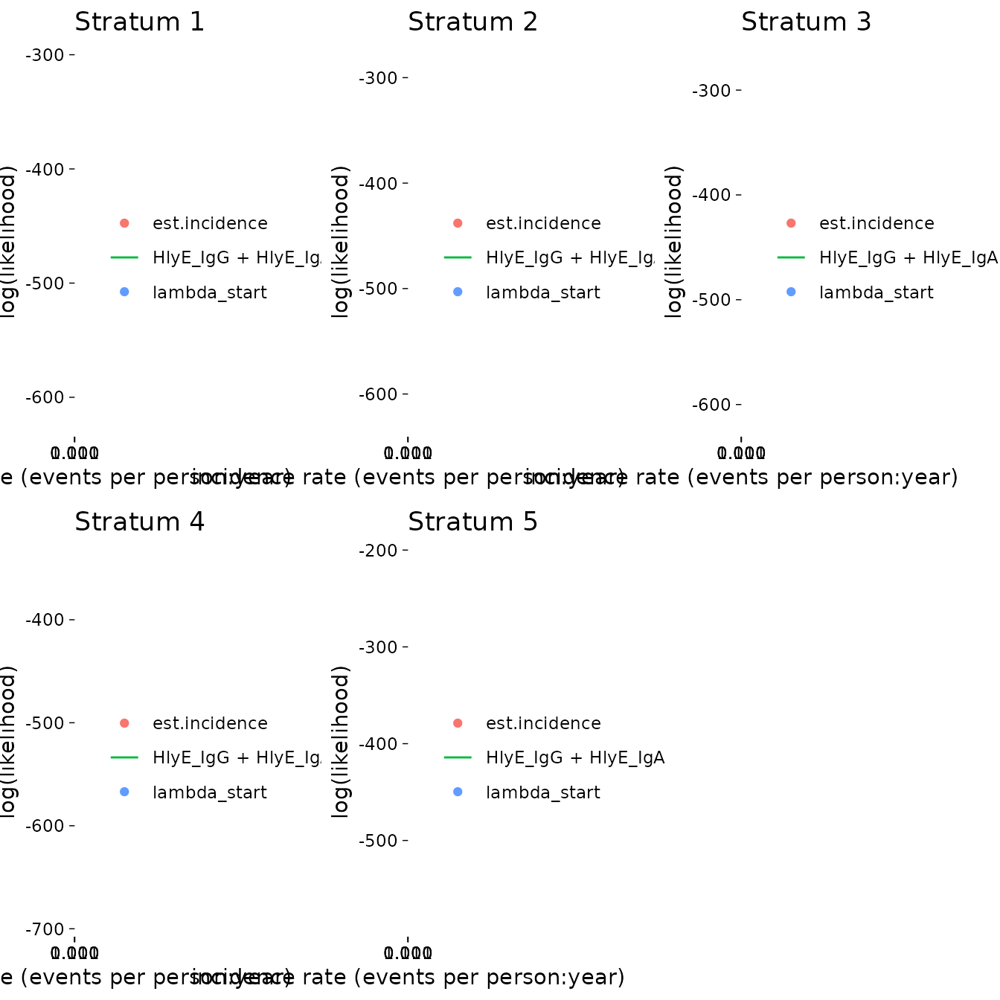
nlm() convergence codes
Make sure to check the nlm() exit codes (codes 3-5
indicate possible non-convergence):
ests_summary |>
as_tibble() |> # removes extra meta-data
select(Stratum, nlm.convergence.code) |>
filter(nlm.convergence.code > 2)
#> # A tibble: 2 × 2
#> Stratum nlm.convergence.code
#> <chr> <ord>
#> 1 Stratum 11 3
#> 2 Stratum 27 3Solutions to nlm() exit codes 3-5:
- 3: decrease the
stepminargument toest.incidence()/est.incidence.by() - 4: increase the
iterlimargument toest.incidence()/est.incidence.by() - 5: increase the
stepmaxargument toest.incidence()/est.incidence.by()
We can extract the indices of problematic strata, if there are any:
If any clusters had problems, we can take a look:
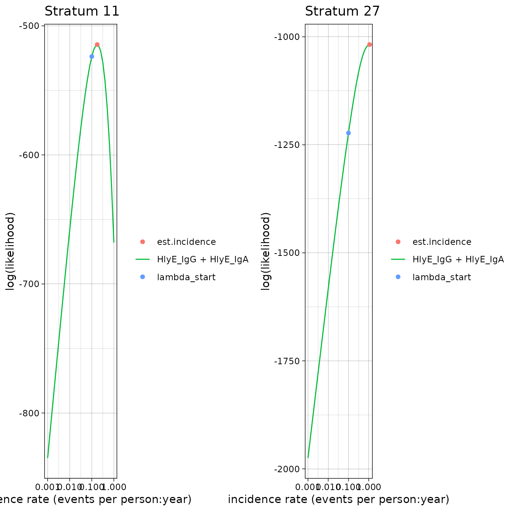
If any of the fits don’t appear to be at the maximum likelihood, we
should re-run those clusters, adjusting the nlm() settings
appropriately, to be sure.
plot distribution of estimates by simulated incidence rate
Finally, we can look at our simulation results:
library(ggplot2)
ests_summary |>
autoplot(xvar = "lambda.sim") +
ggplot2::geom_function(
fun = function(x) x,
col = "red",
aes(linetype = "data-generating incidence rate")
) +
labs(linetype = "") +
scale_x_log10()
#> Warning in scale_x_log10(): log-10 transformation introduced
#> infinite values.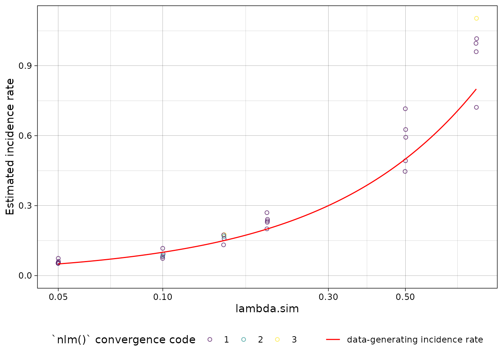
Effect of renew_params
Setting renew_params = TRUE is more realistic, but not
is accounted for by the current method; for population samples from
populations with high incidence rates, there may be bias:
sim_df_renew <-
sim_pop_data_multi(
n_cores = n_cores,
lambdas = lambdas,
nclus = nclus,
n_samples = nrep,
age_range = lifespan,
antigen_isos = antibodies,
renew_params = TRUE,
add_noise = TRUE,
curve_params = dmcmc,
noise_limits = dlims,
format = "long"
)
ests_renew <-
est.incidence.by(
pop_data = sim_df_renew,
curve_params = dmcmc,
noise_params = cond,
num_cores = n_cores,
strata = c("lambda.sim", "cluster"),
curve_strata_varnames = NULL,
noise_strata_varnames = NULL,
verbose = verbose,
build_graph = TRUE, # slows down the function substantially
antigen_isos = c("HlyE_IgG", "HlyE_IgA")
)
ests_renew_summary <-
ests_renew |> summary()
#> Warning in sqrt(var_log_lambda): NaNs produced
#> Warning in sqrt(var_log_lambda): NaNs produced
#> Warning in sqrt(var_log_lambda): NaNs produced
#> Warning in sqrt(var_log_lambda): NaNs produced
ests_renew_summary |>
autoplot(xvar = "lambda.sim") +
ggplot2::geom_function(
fun = function(x) x,
col = "red",
aes(linetype = "data-generating incidence rate")
) +
labs(linetype = "") +
scale_x_log10()
#> Warning in scale_x_log10(): log-10 transformation introduced
#> infinite values.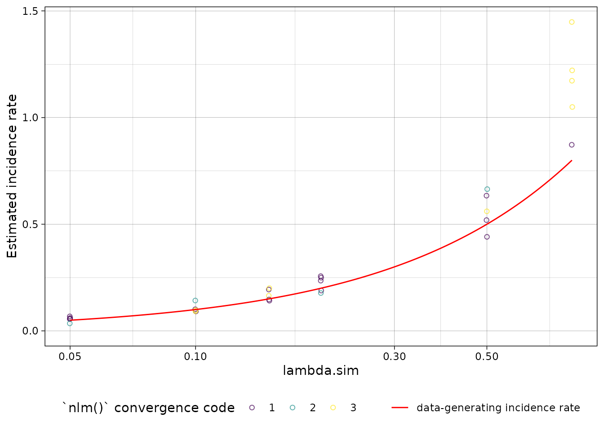